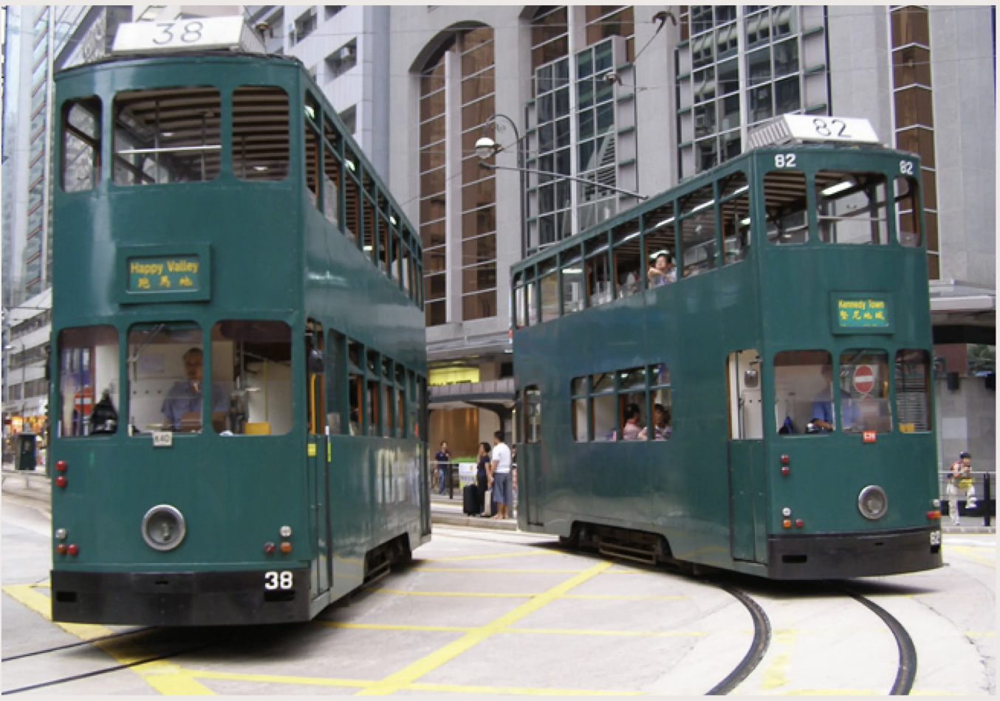

Ding Ding - The Historical Hong Kong Trams
Operating strictly on Hong Kong Island, these historic double-decker trams are slow compared to the MTR, but they cost next to nothing (flat fare) and offer an incredible, scenic view of the city streets. Hop on from the back, go up the stairs to the upper deck front row for the best views, and pay a flat, budget-friendly fare via your Octopus card when stepping off at the front exit next to the driver.
